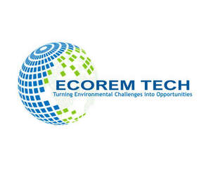

Trade Mark Journal No.2025/029 18 July 2025
UK00004230006 7 July 2025 (1,5,7,9,35,40,42,44)

- Class 1
- Enzymes derived from biotechnological processes for use in industry; Fertilisers, and chemicals for use in agriculture, horticulture and forestry.
- Class 5
- Agricultural biopesticides.
- Class 7
- Bioreactors for use in manufacturing biopharmaceuticals.
- Class 9
- Bioreactors for cell culturing for scientific research.
- Class 35
- Development of business organization strategies relating to corporate social responsibility; Advertising services to promote public awareness of environmental matters.
- Class 40
- Soil, waste or water treatment services [environmental remediation services]; Bioremediation services; Mold prevention treatment; Treatment of contaminated soil; Oil-spill treatment; Consultancy relating to the treatment of oil pollution; Odour removal services; Production of green energy; Water pollution control.
- Class 42
- Biotechnology research; Biotechnology testing; Consultancy in the field of biotechnology; Research relating to biotechnology; Research and development in the field of biotechnology; Consultancy relating to biotechnology; Biotechnological research relating to agriculture; Design services relating to plant for the biotechnology industry; Biotechnological research relating to industry; Biotechnological research relating to the petroleum industry; Providing information relating to scientific research in the fields of biochemistry and biotechnology; Information on the subject of scientific research in the field of biochemistry and biotechnology; Preparation of reports in the biotechnology field; Research relating to molecular sciences; Scientific research in the field of genetics and genetic engineering; Agricultural research; Biotechnological research relating to enzymatic synthesis; Science and technology services; Biology consultancy; Research and development in the field of microorganisms and cells; Scientific and industrial research; Environmental consultancy services; Consultancy services relating to environmental planning; Technical consultancy in the field of environmental science; Consultancy services relating to research in the field of environmental protection; Environmental assessment services; Advisory services relating to environmental pollution; Scientific consultancy; Environmental monitoring services; Advisory services relating to environmental protection; Research in the field of environmental conservation; Environmental surveys; Research in the field of environmental protection; Environmental protection (Research in the field of -); Environmental testing; Biochemistry consultancy; Environmental testing services to detect contaminants in water; Environmental testing and inspection services; Conducting sampling and analysis services to assess pollution levels; Soil testing services; Conducting sampling and analysis services to check for contamination; Sampling for contamination; Scientific research in the field of environmental protection; Scientific research relating to ecology; Advisory services relating to pollution control; Sampling for pollution.
- Class 44
- Advisory and consultancy services relating to the use of non-chemical treatments for sustainable agriculture and horticulture; Professional consultancy relating to agriculture; Pest control services for agriculture, aquaculture, horticulture and forestry.
Ecorem Tech Limited